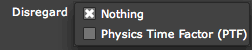

Render tab> Motion Blur
Motion Blur gives particles that move really fast a smooth look, like a real world camera does. Let's see how that works.
The Motion Blur group.
Technical Note about render time
Something to note is that Motion Blur produces a LOT of particles, which can make your project quite memory intense. This is because Motion Blur in Particular is somewhat different from Motion Blur in other software.
Most applications and plugins blend some frames that are time offset to produce a blurred frame. In Particular, additional particles are inserted into the particle list before rendering. This method means that depth cueing in the blurred frame is correct. It also means that per-particle transfer modes are applied for each blur level, and that produces a lot of extra particles.
Left to right, Motion Blur turned off and on.
Motion Blur pop-up
By default, Motion Blur is turned on. If you disable Motion Blur with the Off option then all of the Motion Blur parameters become grayed out and inactive.
Shutter Angle
Shutter Angle sets how long the virtual camera shutter stays open when a picture is taken. This controls the 'streak-length' or 'blur-length' of particles. High values set a longer particle streak. Low values set a short streak.
Shutter Phase
Shutter Phase offsets the point in time when the virtual camera shutter opens.
Type
Sets the behavior of the Motion Blur.

There are two Type options:
Levels
Active when Type> Subframe Sample is selected. Sets the number of Position and Rotation points to sample when using the Subframe Sample method. Higher values mean more samples.
Linear Accuracy
Active when the Linear Type option is selected. Linear Accuracy affects the sampling when these particles are rendered. Higher values cause the Motion Blur algorithm to calculate with greater accuracy. Linear Accuracy only works with the custom Particle Types, Sprite and Textured Polygon.
Opacity Boost
When Motion Blur is active, the particles look 'smeared' out. This smearing can make the particles lose their strength and become less opaque. Opacity Boost can counteract that loss. Higher values mean there is more opacity added to the particles.
Opacity Boost is useful when creating sparks, or any particle that acts as a light-emitter.
Disregard
For some animations, you will not want everything in the composition to be motion blurred. With Disregard, some parts of the particle simulation can be ignored when Motion Blur is computed.

There are two Disregard options: